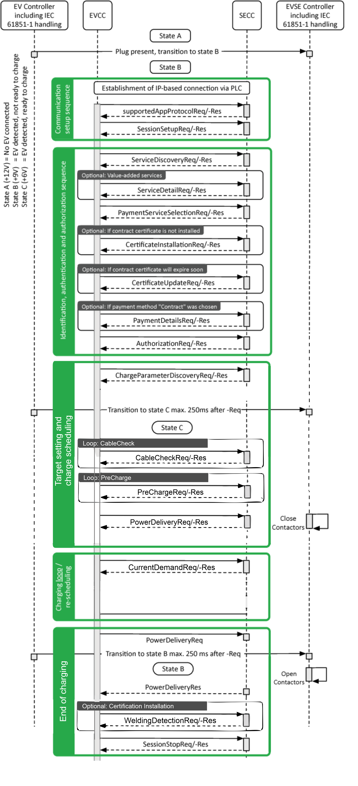
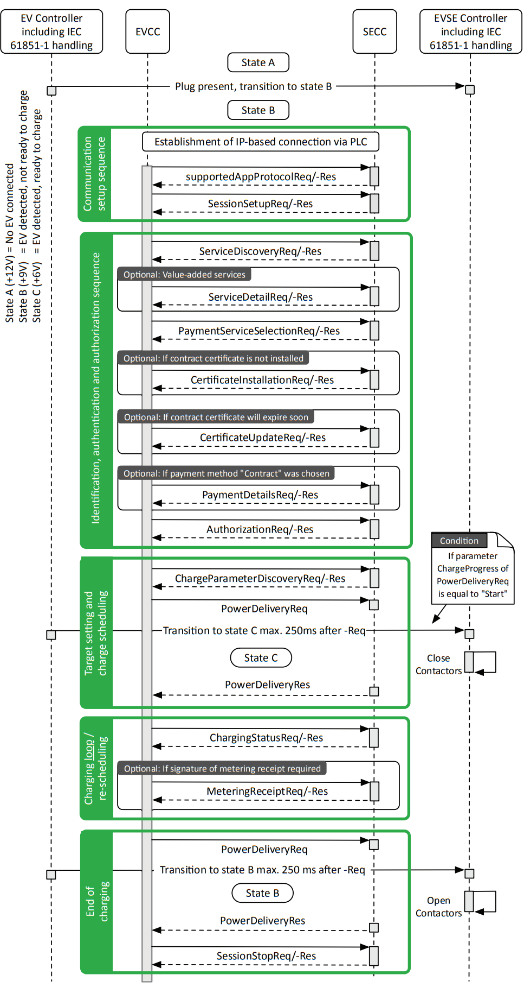

ISO 15118-2 Protocol
Description of the ISO 15118-2 Protocol implementation in the Typhoon HIL toolchain.
IEC 61851 standard
In order to understand the ISO 15118-2 Protocol, it is important to first mention the IEC 61851 standard that defines the use of this protocol. This section describes the standard and how ISO 15118-2 is linked to it.
The IEC 61851 - Electric vehicle conductive charging system [1] standard defines the characteristics of on-board and off-board equipment for charging electric road vehicles at standard AC supply voltages up to 1000 V and at DC voltages up to 1500 V.
- Charging Mode 1 - AC charging, EV to mains over standard 1ph/3ph sockets. Up to 16 A and 250/480 V. No protection device in the charging cable.
- Charging Mode 2 - AC charging, EV to mains over standard 1ph/3ph sockets. Up to 32 A and 250/480 V. Protection device integrated in the charging cable.
- Charging Mode 3 - AC charging using dedicated AC charging stations. Mandatory PWM signaling and optional High Level Communication (HLC)
- Charging Mode 4 - DC charging using dedicated DC charging stations. Mandatory PWM signaling and mandatory High Level Communication (HLC)
- System A - The physical/data layer is through CAN bus A interface while the application layer is defined in IEC 61851-24 standard.
- System B - The physical/data layer is through CAN bus B interface while the application layer is defined by the GB/T 27930 standard.
- System C - The physical/data layer is through Power Line Communication (PLC) while the application layer is defined by the ISO 15118-2 Protocol.
In other words, the ISO 15118-2 Protocol is responsible for defining the digital communication layer between the EV and EVSE for the DC charging mode when System C is applied.
ISO 15118-2 Protocol
ISO 15118-2 (Road Vehicles – Vehicle to grid communication interface) [3] specifies the digital communication protocol between Electric Vehicles (EV), including Battery Electric Vehicles and Plug-In Hybrid Electric Vehicles, and the Electric Vehicle Supply Equipment (EVSE). As the communication parts of this generic equipment are the Electric Vehicle Communication Controller (EVCC) and the Supply Equipment Communication Controller (SECC), ISO 15118-2 describes the communication between these components.
Although ISO 15118-2 is oriented to the charging of electric road vehicles, it is open for other vehicles as well. As part of the Combined Charging System (CCS), ISO 15118-2 covers wired (AC and DC), wireless charging applications and enables the integration of EVs into the smart grid (V2G - vehicle-to-grid).
ISO 15118-2 allows the EV and charging station to dynamically exchange information based on which a proper charging schedule can be (re-)negotiated. Smart charging applications calculate an individual charging schedule for each EV by using the information available about the state of the electrical grid, the energy demand of each EV, and the mobility needs of each driver (departure time and driving range). This way, each charging session perfectly matches the capacity of the grid to the electricity demand of simultaneously charging EVs.
ISO 15118-2 also comes with a feature called Plug & Charge. Plug & Charge deploys several cryptographic mechanisms to secure this communication and guarantee the confidentiality, integrity, and authenticity of all exchanged data. This is achieved by using the Transport Line Security (TLS) protocol.
- security concept including encryption, signing, key management, etc.
- robust PLC-based communications
- automatic address assigning and association
- IPv6-based communications
- compressed XML messages
- client-server approach
- safety concept including cable check, welding detection, etc
- extension concept for added-value services
According to the protocol, the EV charging process is separated into eight functional groups [3] as shown in Table 1.
| Group | Function | Description |
|---|---|---|
| A | START OF THE CHARGING PROCESS | Initiation of the process between the vehicle and the EVSE after physically plugging-in the vehicle. Sets the basis for the on-going charging process e.g. availability of PWM, High Level Communication etc. |
| B | COMMUNICATION SETUP | Establishes the association and relevant connection between the EVCC and the SECC |
| C | CERTIFICATION HANDLING | All communication related to certificates |
| D | INDETIFICATION AND AUTHORIZATION | Methods for identification and authorization |
| E | TARGET SETTING AND CHARGING SCHEDULING | Information needed from the EV as well as from the SECC and the secondary actor to start the charging process and charging |
| F | CHARGING CONTROLLING AND RE-SCHEDULING | Commands to control elements during the charging process |
| G | VALUE-ADDED SERVICES | Additional elements not directly necessary for charging electric vehicles |
| H | END-OF-CHARGE PROCESS | Triggers for signaling the end of the charging process |
Message sequence for an ISO 15118-2 DC charging session
The charging process for a DC charging session carried out by ISO 15118-2 [4] is illustrated in Figure 1. The entities that carry out certain actions, such as sending or receiving messages and opening or closing contactors, are illustrated in the boxes at the top. States A, B, and C relate to certain voltage levels measured by the charging station and are defined in IEC 61851. ISO 15118-2 builds and expands on IEC 61851 and enables digital communication between EVCC and SECC, which starts as soon as the duty-cycle of the pulse width modulation (PWM) signal is set to 5%, as defined in IEC 61851 [2].

- Communication setup sequence:
- supportedAppProtocolRequest: The EV and the charging station use this request-response message pair to agree upon a protocol version. During this transition phase, it is important that both the EV and charging station speak the same version of ISO 15118-2. If they are not compatible, it will not be possible to initiate an ISO 15118-2 charging session.
- SessionSetupRequest: Used to assign a unique session ID for a communication session. The session can be paused and resumed later using the same session ID. In this case, the previously agreed upon charging parameters will be applied again to ensure charging continues as originally intended by the driver.
- Identification, authentication and authorization sequence:
- ServiceDiscovery: EV requests the charging station about its offerings. These services include AC single-phase charging or AC three-phase charging, variations of DC charging, available identification mechanisms (External Identification Means (EIM) or Plug & Charge), and optional value-added services such as Internet access to download additional data. The EV can request more details for each service by using the optional ServiceDetailRequest message.
- PaymentServiceSelection: Once the identification mechanism, charging mode, and optional value-added services to use are clear, the EV informs the charging station with the PaymentServiceSelectionRequest.
- CertificateInstallation: In case the EV selects Plug & Charge as an identification method, a valid digital contract certificate must be installed in order for the charging station to automatically authenticate and authorize the driver. If the EV does not yet have this certificate installed or if its existing contract certificate has expired, the EV can use the CertificateInstallation message pair to install a new contract certificate from the charging station.
- CertificateUpdate: In cases where an EV has a soon-to-be expired contract certificate installed for Plug & Charge, the EV can be programmed to initiate a CertificateUpdate message pair to receive a new contract certificate.
- PaymentDetails: If the EV is programmed to select Plug & Charge as its identification method, the EV will need to present its contract certificate to the charging station in order for the driver to be authenticated and authorized for charging. This is done using the PaymentDetailsRequest message.
- Authorization: The Authorization message pair is used to avoid a replay attack. This is a form of network attack in which a valid data transmission is maliciously or fraudulently repeated in order to gain access to a restricted resource.
- Target setting and charge scheduling:
- ChargeParameterDiscovery: the EV and the charging station mutually exchange their respective technical charging limits by communicating their maximal and minimal allowed voltage levels and amperage. The EV also informs the charging station of the amount of energy needed and the desired departure time provided by the driver. The SECC will then calculate a charge schedule to propose to the EV. The proposed schedule will include the maximum power with which the EV is allowed to charge while connected to the charging station as well as an optional SalesTariff. The SalesTariff includes schedules that provide information on cost over time, cost in relation to power demand and amount of energy, or a combination of these, aimed at incentivizing the EV to engage in a certain charging behavior.
- CableCheck: For safe DC charging, a cable check shall be performed. The CableCheckReq asks for the cable check status of the EVSE and e.g. tells the EVSE if the connector is locked on EV side and if the EV is ready to charge. After receiving the CableCheckReq, the SECC sends the CableCheckRes with the information of cable check and EVSE status.
- PreCharge: Pre charge is used for adjusting the EVSE output voltage to the EV battery voltage. The EV sends the Pre-Charge Request, which contains both the requested DC current (maximum inrush current) and the requested DC voltage. After receiving the PreChargeReq, the SECC sends the PreChargeRes informing the EV about the EVSE status and the present EVSE output voltage.
- PowerDelivery: The Power Delivery message exchange marks the point in time when the EVSE provides voltage to its output power outlet and the EV can start to recharge its battery. After the DC supply gives feedback that it is ready for energy transfer, the EV sets the DC current request to start the energy transfer phase. By sending the PowerDeliveryReq the EVCC requests the SECC to provide power on and transmits the ChargingProfile the EVCC will follow during the charging process. After receiving the PowerDeliveryReq message, the SECC sends the PowerDeliveryRes message including information if the power will be available.
- Charging loop/re-scheduling:
- CurrentDemand: For DC charging control, cyclic exchange of the requested current from the EV side is necessary. Also the target voltage and the difference in current and voltages is transferred. By sending the CurrentDemandReq the EV requests a certain current from the EVSE. After receiving the CurrentDemandReq, the SECC sends the CurrentDemandRes informing the EV about the EVSE status and the present output voltage and current. We are now in a charging loop.
- End of charging:
- PowerDelivery: As soon as the EV intends to pause or end the charging session based on its calculated charging schedule, it will send another PowerDeliveryRequest message with its parameter ChargeProgress set to Stop. If the EV battery reaches a charge complete SoC, the charging session will be stopped.
- WeldingDetection: The Welding Detection messages allow implementation of the Welding Detection mechanism according to IEC 61851. It is used to prevent the welding of the EV contactor.
- SessionStop: The communication concludes with the SessionStopReq/-Res message pair. The ChargingSession parameter can be set to either Terminate or Pause. If the charging session is to be paused, certain parameters, like the agreed-upon charging schedule, are temporarily stored by the charging station so it can apply these values when charging resumes.
Message sequence for an ISO 15118-2 AC charging session
The charging process for a AC charging session carried out by ISO 15118-2 [4] is illustrated in Figure 2. The entities that carry out certain actions, such as sending or receiving messages and opening or closing contactors, are illustrated in the boxes at the top. States A, B, and C relate to certain voltage levels measured by the charging station and are defined in IEC 61851. ISO 15118-2 builds and expands on IEC 61851 and enables digital communication between EVCC and SECC, which starts as soon as the duty-cycle of the pulse width modulation (PWM) signal is set to 5%, as defined in IEC 61851 [2].

- Communication setup sequence:
- supportedAppProtocol: The EV and the charging station use this request-response message pair to agree upon a protocol version. During this transition phase, it is important that both the EV and charging station speak the same version of ISO 15118-2. If they are not compatible, it will not be possible to initiate an ISO 15118-2 charging session.
- SessionSetup: Used to assign a unique session ID for a communication session. The session can be paused and resumed later using the same session ID. In this case, the previously agreed upon charging parameters will be applied again to ensure charging continues as originally intended by the driver.
- Identification, authentication and authorization sequence:
- ServiceDiscovery: EV requests the charging station about its offerings. These services include AC single-phase charging or AC three-phase charging, variations of DC charging, available identification mechanisms (External Identification Means (EIM) or Plug & Charge), and optional value-added services such as Internet access to download additional data. The EV can request more details for each service by using the optional ServiceDetailRequest message.
- PaymentServiceSelection: Once the identification mechanism, charging mode, and optional value-added services to use are clear, the EV informs the charging station with a PaymentServiceSelectionRequest.
- CertificateInstallation: In case the EV selects Plug & Charge as an identification method, a valid digital contract certificate must be installed in order for the charging station to automatically authenticate and authorize the driver. If the EV does not yet have this certificate installed or if its existing contract certificate has expired, the EV can use the CertificateInstallation message pair to install a new contract certificate from the charging station.
- CertificateUpdate: In cases where an EV has a soon-to-be expired contract certificate installed for Plug & Charge, the EV can be programmed to initiate a CertificateUpdate message pair to receive a new contract certificate.
- PaymentDetails: If the EV is programmed to select Plug & Charge as its identification method, the EV will need to present its contract certificate to the charging station in order for the driver to be authenticated and authorized for charging. This is done using the PaymentDetailsRequest message.
- Authorization: The Authorization message pair is used to avoid a replay attack. This is a form of network attack in which a valid data transmission is maliciously or fraudulently repeated in order to gain access to a restricted resource.
- Target setting and charge scheduling:
- ChargeParameterDiscovery: the EV and the charging station mutually exchange their respective technical charging limits by communicating their maximal and minimal allowed voltage levels and amperage. The EV also informs the charging station of the amount of energy needed and the desired departure time provided by the driver. The SECC will then calculate a charge schedule to propose to the EV. The proposed schedule will include the maximum power with which the EV is allowed to charge while connected to the charging station as well as an optional SalesTariff. The SalesTariff includes schedules that provide information on cost over time, cost in relation to power demand and amount of energy, or a combination of these, aimed at incentivizing the EV to engage in a certain charging behavior.
- PowerDelivery: The Power Delivery message exchange marks the point in time when the EVSE provides voltage to its output power outlet and the EV can start to recharge its battery. After the AC supply gives feedback that it is ready for energy transfer, the EV sets the A0C current request to start the energy transfer phase. By sending the PowerDeliveryReq the EVCC requests the SECC to provide power on and transmits the ChargingProfile that the EVCC will follow during the charging process. After receiving the PowerDeliveryReq message, the SECC sends the PowerDeliveryRes message including information if the power will be available.
- Charging loop/re-scheduling:
- ChargingStatus: The Charging Status message pair provides sanity checks on the meter readings provided by the SECC. On the basis of the iteratively exchanged Charging Status messages the EV has means to check and validate the power drawn from the EVSE. Also, it allows the SECC to request the EVCC to sign the meter info record included in the ChargingStatusRes message by using the meter receipt message pair.
- MeteringReceipt: When a MeteringReceiptReq message is sent, the EVCC acknowledges that the data elements MeterInfo record, SessionID, and SAScheduleTupleID are included in the ChargingStatusRes message prior to the reciept of the request by the SECC. This confirmation is implemented by applying a signature to the message body of the MeteringReceiptReq message. The signature applied by the EVCC is intended only to confirm that the EVCC, together with the currently applied charging contract certificate, which was selected for this charging session, has received the data elements MeterInfo record, SessionID and SAScheduleTupleID included in the Charging Status Res message prior to this request. It is not intended to confirm that the amount of energy indicated in the previous MeterInfo record is correct in the context of billing.
- End of charging:
- PowerDelivery: As soon as the EV intends to pause or end the charging session based on its calculated charging schedule, it will send another PowerDeliveryRequest message with its ChargeProgress parameter set to Stop. If charge complete SoC is reached by the EV battery the charging session will be stopped.
- SessionStop: The communication concludes with the SessionStopReq/-Res message pair. The ChargingSession parameter can be set to either Terminate or Pause. If the charging session is to be paused, certain parameters, like the agreed-upon charging schedule, are temporarily stored by the charging station so it can apply these values when charging resumes.
ISO 15118-2 Protocol implementation in Typhoon HIL toolchain
Although IEC 61851 defines that the EVCC and SECC communicate using ISO 15118-2 through Power Line Communication (PLC) the protocol itself is Ethernet-based, and as such is implemented in the Typhoon HIL toolchain. It is supported by the following Typhoon HIL devices: HIL402, HIL101, HIL404, HIL602+, HIL604, HIL506, and HIL606. To convert the Ethernet to PLC, additional modems, such as the Green Phy module, can be used.
The Electric Vehicle side communication is implemented using the ISO 15118-2 EVCC component located in the Communication → EV charging → ISO 15118 folder in the Schematic Editor Library.
The Supply Equipment side of communication is implemented using the ISO 15118-2 SECC component located in Communication → EV charging → ISO 15118 folder in the Schematic Editor Library.
| Field | Value |
|---|---|
| Protocol namespace | namespace: uru:iso:15118:2:2013:MsgDef |
| Version number major | 2 |
| Version number minor | 0 |
| Schema ID | 10 |
| Priority | 1 |
ISO 15118-2 EVCC component
The ISO 15118-2 EVCC component implements the EV side of the protocol. It is important to specify that the component implements only the communication interface and not the controller itself. In other words, the component is used only to relay the necessary messages between the EVCC and SECC. The controller (or logic) part is left to the user to implement using Signal Processing components.
The ISO 15118-2 EVCC component is shown in Figure 3.

The ISO 15118-2 EVCC properties lets you customize your message structure based on several option groups, defined below. Changing the option on the left affects which Charge parameters appear on the right. Additional information on Charge parameters is shown in the Charge parameters property value.
- Connection options:
- Medium type:
- Choose the medium type through which SECC and EVCC will communicate. Ethernet and PLC medium type are available.
- Ethernet port:
- Select the Ethernet port on the back of the HIL device that is used by the ISO 15118-2 EVCC application.
- For 4th generation devices (HIL101, HIL404, HIL506, and HIL606), any available port can be used for communication, while older devices only support communication over port 1.
- Connection type:
- Define the connection type between EV and EVSE. Trusted connection (using TCP protocol) and Secured connection (using TLS) connection types are available.
- Import folder with certificates:
- Available if Secured connection connection type is chosen.
- Navigate to the folder containing the necessary certificates from SECC, which will be imported into EVCC in order to establish the desired communication.
- In case the Secured connection connection type and
External Payment payment option are chosen, the
required certificate is:
- v2gRootCACert.pem
- In case the Secured connection connection type and
Contract payment option are chosen the required
certificates are:
- v2gRootCACert.pem
- v2gRootCACert.der
- Imported folder path:
- Available if Secured connection connection type is chosen.
- Displays the filepath of the chosen folder.
- Path type:
- Available if Secured connection connection type is chosen .
- Depending on the selected value, the path to the folder will be Absolute or Relative.
- Medium type:
- Service and payment:
- Service category:
- Choose the service category that the EV intends to use. Currently, EV charging is the only available value service.
- Payment option:
- Choose the payment option that the EV intends to use.
External Payment and Contract payment
options are available.
The Contract payment option is available for use only if the Secured connection conection type is chosen, while the External Payment payment option can be used for both connection type options.
- Choose the payment option that the EV intends to use.
External Payment and Contract payment
options are available.
- Service category:
- Energy transfer mode:
- Energy transfer mode:
- Choose the energy transfer mode that the EV expects. DC core, DC extended, DC combo core, DC unique, AC three phase core and AC single phase core energy transfer modes are available.
- Energy transfer mode:
- Welding detection:
- Perform Welding detection:
- Available if one of the following energy transfer modes is chosen: DC core, DC extended, DC combo core, or DC unique.
- Choose if Welding detection request message will be included in the communication session.
- Perform Welding detection:
- Voltage accuracy:
- Pre-charge voltage accuracy:
- Available if one of the following energy transfer modes is chosen: DC core, DC extended, DC combo core, or DC unique.
- By the IEC 61851 standard, the main charging contactor on the EV side can be closed only when there is no significant offset between the EVSE output voltage and the Battery voltage in order to prevent current inrush. The Pre-charge voltage accuracy define that offset.
- Pre-charge voltage accuracy:
- Advanced settings:
- Allow negative values for current:
- Available if one of the following energy transfer modes is chosen: DC core, DC extended, DC combo core, or DC unique.
- Enable or disable negative current values. Negative current values are not in accordance with the ISO 15118-2 protocol, but this option has been added as a custom feature.
- Allow negative values for current:
- Execution rate:
- Signal processing execution rate. Execution rate must match with the other components used in the model.
- Logging:
- Logging level:
- Logging priority level of the ISO 15118-2 EVCC component. Possible options are Off, Info, Debug, Warning, and Error. Based on what is selected, messages of that rank and higher will be displayed.
- Logging output:
- Available if Logging level is set to Info, Debug, Warning, or Error.
- Logging ouput specifies where logging messages will appear.
- UDP port:
- If UDP is chosen for logging the output, messages will appear on UDP broadcast network. The UDP port specifies a port on which logging messages will appear.
- Logging level:
- Charge parameters:
- Charge parameters DC:
- Available if one of the following energy transfer modes is chosen: DC core, DC extended, DC combo core, or DC unique.
- The Charge parameters DC defines all the static values that describe the EV request. A detailed description of all the values is in the Definitions of charge parameters section.
- Charge parameters AC:
- Available if one of the following energy transfer modes is chosen: AC three phase core, or AC single phase core.
- The Charge parameters AC defines all the static values that describe the EV request. A detailed description of all the values is in the Definitions of charge parameters section.
- Charge parameters DC:
Charge parameters property value
Charge parameters are used to define the EV specification and ratings. These parameters are used across different request messages such as ChargeParameterDiscoveryReq, PowerDeliveryReq, PreChargeReq and CurrentDemandReq, in case DC charging is chosen, or ChargeParameterDiscoveryReq, PowerDeliveryReq and ChargingStatusReq, in case AC charging is chosen. Some of these parameters are optional and some are mandatory. The definitions are listed in Definitions of charge parameters.
The Charge parameters property is defined as a Python dictionary with pre-defined fields. All of these fields are also dictionaries with the fields value, multiplier and include. The presence of these fields correlate to the parameter itself. If the parameter is optional, the include field is mandatory, if the parameter is of type PhysicalValue the multiplier is mandatory, and if the property is static, the value field is mandatory.
Static parameters are those that are not changed during the charging process, such as Maximum current limit, Maximum voltage limit, and Full SoC, in case DC charging is chosen, or EAmount, Max Voltage, Max Current, and Min Current, in case AC charging is chosen. On the other hand, dynamic properties change value during the whole charging process. The dynamic properties are Target voltage, Target current, Time to full SoC, and Time to bulk SoC, in case DC charging is chosen. These values are specified by the input terminals on the component.
PhysicalValue is a specific type defined by the ISO 15118 standard and it consists of value, multiplier and unit. The value is a short type (-32768 - 32767) and the multiplier is byte (-3 - 3). The real value is calculated using the formula:
value * 10 ^ (multiplier)
- Departure Time:
- Optional parameter
- Type: unsigned int
- Range: 0 - 4294967295
- Used to indicate when the vehicle intends to finish the charging process. This value allows the EVSE to define the charging strategy. With the value 0, the EV indicates that the charging process should start right away.
- Maximum Current limit:
- Mandatory parameter
- Type: PhysicalValue
- Range: 0 - 400 A
- Maximum current supported by the EV.
- Maximum Voltage limit:
- Mandatory parameter
- Type: PhysicalValue
- Range: 0 - 1000 V
- Maximum voltage supported by the EV.
- Maximum Power limit:
- Optional parameter
- Type: PhysicalValue
- Range: 0 - 200000 W
- Maximum power supported by the EV.
- Energy Capacity:
- Optional parameter
- Type: PhysicalValue
- Range: 0 - 200000 Wh
- Energy capacity of the EV.
- Energy Request:
- Optional parameter
- Type: PhysicalValue
- Range: 0 - 200000 Wh
- Amount of energy the EV requests from the EVSE.
- Full SoC:
- Optional parameter
- Type: byte
- Range: 0 - 100
- SoC at which the EV considers the battery to be fully charged.
- Bull SoC:
- Optional parameter
- Type: byte
- Range: 0 - 100
- SoC at which the EV considers a fast charge process to end.
- Target Voltage:
- Mandatory parameter
- Type: PhysicalValue
- Range: 0 - 1000 V
- Voltage that the EV requests from the EVSE.
- Target Current:
- Mandatory parameter
- Type: PhysicalValue
- Range: 0 - 400 A
- Current that the EV requests from the EVSE.
- Time to Full SoC:
- Optional parameter
- Type: PhysicalValue
- Range: 0 - 172800 s
- Calculated time until the Battery reaches the full SoC.
- Time to Bulk SoC:
- Optional parameter
- Type: PhysicalValue
- Range: 0 - 172800 s
- Calculated time until the Battery reaches the bulk SoC.
- EAmount:
- Mandatory parameter
- Type: PhysicalValue
- Range: 0 - 200000 Wh
- Amount of energy reflecting the EV's estimate of how much energy is needed to fulfill the user configured charging goal for the current charging session.
- Max Voltage:
- Mandatory parameter
- Type: PhysicalValue
- Range: 0 - 1000 V
- The RMS of the maximal nominal voltage the vehicle can accept.
- Max Current:
- Mandatory parameter
- Type: PhysicalValue
- Range: 0 - 400 A
- Maximum current supported by the EV per phase.
- Min Current:
- Mandatory parameter
- Type: PhysicalValue
- Range: 0 - 400 A
- Used to indicate to the SECC that charging below this minimum is not energy/cost efficient for the EV.
Input/Output terminals and State values
The Signal Processing signals are passed to and from the ISO 15118-2 EVCC component using its terminals.
- PP - rather than passing the voltage level of the Proximity Pilot (PP)
signal, the PP state should be passed defined as:
- PP_STATE_ERROR = -1
- PP_STATE_DISCONNECTED = 0
- PP_STATE_CONNECTED = 1
- PP_STATE_DEPRESSED = 2
- CP - rather than passing the voltage level of the Control Pilot (CP) signal,
the CP state should be passed defined as:
- CP_STATE_ERROR = -1
- CP_STATE_A = 0
- CP_STATE_B = 1
- CP_STATE_C = 2
- CP_STATE_D = 3
- EVReady - defines the EVReady value as 0 or 1
- EVErrorCode - state values are defined as:
- EV_NO_ERROR = 0
- EV_FAILED_RESS_TEMPERATURE_INHIBIT = 1
- EV_FAILED_EV_SHIFT_POSITION = 2
- EV_FAILED_CHARGER_CONNECTOR_LOCK_FAULT = 3
- EV_FAILED_EVRESS_MALFUNCTION = 4
- EV_FAILED_CHARGING_CURRENTDIFFERENTIAL = 5
- EV_FAILED_CHARGING_VOLTAGE_OUT_OF_RANGE = 6
- EV_RESERVED_A = 7
- EV_RESERVED_B = 8
- EV_RESERVED_C = 9
- EV_FAILED_CHARGING_SYSTEM_INCOMPATIBILITY = 10
- EV_NO_DATA = 11
- EVSoC - unsigned integer value 0 -100
- EVTargetVoltage - unsigned integer value
- EVTargetCurrent - unsigned integer value
- EVChargeComplete - defines the ChargeComplete as 0 or 1
- EVBulkChargeComplete - defines the BulkChargeComplete as 0 or 1
- EVTimeToFullSoC - unsigned integer value
- EVTimeToBulkSoC - unsigned integer value
- SessionActive - defined as 0 or 1
- EVSentMessage - Indicates the last message that was sent by the EV. Defined
as:
- SUPPORTED_APP_PROTOCOL_REQ = 1
- SESSION_SETUP_REQ = 2
- SERVICE_DISCOVERY_REQ = 3
- SERVICE_DETAIL_REQ = 4
- PAYMENT_SERVICE_SELECTION_REQ = 5
- CERTIFICATE_INSTALLATION_REQ = 6
- CERTIFICATE_UPDATE_REQ = 7
- PAYMENT_DETAILS_REQ = 8
- AUTHORIZATION_REQ = 9
- CHARGE_PARAMETER_DISCOVERY_REQ = 10
- CABLE_CHECK_REQ = 11
- PRE_CHARGE_REQ = 12
- POWER_DELIVERY_REQ (ChargeProgress = START) = 13
- CHARGING_STATUS_REQ = 14
- METERING_RECEIPT_REQ = 15
- CURRENT_DEMAND_REQ = 16
- POWER_DELIVERY_REQ (ChargeProgress = STOP) = 17
- WELDING_DETECTION_REQ = 18
- SESSION_STOP_REQ = 19
- EVReceivedMessage - Indicates the last message that was received from the
EVSE. Defined as:
- SUPPORTED_APP_PROTOCOL_RES = 1
- SESSION_SETUP_RES = 2
- SERVICE_DISCOVERY_RES = 3
- SERVICE_DETAIL_RES = 4
- PAYMENT_SERVICE_SELECTION_RES = 5
- CERTIFICATE_INSTALLATION_RES = 6
- CERTIFICATE_UPDATE_RES = 7
- PAYMENT_DETAILS_RES = 8
- AUTHORIZATION_RES = 9
- CHARGE_PARAMETER_DISCOVERY_RES = 10
- CABLE_CHECK_RES = 11
- PRE_CHARGE_RES = 12
- POWER_DELIVERY_RES (ChargeProgress = START) = 13
- CHARGING_STATUS_RES = 14
- METERING_RECEIPT_RES = 15
- CURRENT_DEMAND_RES = 16
- POWER_DELIVERY_RES (ChargeProgress = STOP) = 17
- WELDING_DETECTION_RES = 18
- SESSION_STOP_RES = 19
- EVSEResponseCode - defined as a state with values:
- OK = 0
- OK_NEW_SESSION_ESTABLISHED = 1
- OK_OLD_SESSION_JOINED = 2
- OK_CERTIFICATE_EXPIRES_SOON = 3
- FAILED = 4
- FAILED_SEQUENCE_ERROR = 5
- FAILED_SERVICE_ID_INVALID = 6
- FAILED_UNKNOWN_SESSION = 7
- FAILED_SERVICE_SELECTION_INVALID = 8
- FAILED_PAYMENT_SELECTION_INVALID = 9
- FAILED_CERTIFICATE_EXPIRED = 10
- FAILED_SIGNATURE_ERROR = 11
- FAILED_NO_CERTIFICATE_AVAILABLE = 12
- FAILED_CERT_CHAIN_ERROR = 13
- FAILED_CHALLENGE_INVALID = 14
- FAILED_CONTRACT_CANCELED = 15
- FAILED_WRONG_CHARGE_PARAMETER = 16
- FAILED_POWER_DELIVERY_NOT_APPLIED = 17
- FAILED_TARIFF_SELECTION_INVALID = 18
- FAILED_CHARGING_PROFILE_INVALID = 19
- FAILED_METERING_SIGNATURE_NOT_VALID = 20
- FAILED_NO_CHARGE_SERVICE_SELECTED = 21
- FAILED_WRONG_ENERGY_TRANSFER_MODE = 22
- FAILED_CONTACTOR_ERROR = 23
- FAILED_CERTIFICATE_NOT_ALLOWED_AT_THIS_EVSE = 24
- FAILED_CERTIFICATE_REVOKED = 25
- EVSEStatus - defined as a state with values:
- EVSE_NOT_READY = 0
- EVSE_READY = 1
- EVSE_SHUTDOWN = 2
- EVSE_UTILITY_INTERRUPT_EVENT = 3
- EVSE_ISOLATION_MONITORING_ACTIVE = 4
- EVSE_EMERGENCY_SHUTDOWN = 5
- EVSE_MALFUNCTION = 6
- RESERVED_8 = 7
- RESERVED_9 = 8
- RESERVED_A = 9
- RESERVED_B = 10
- RESERVED_C = 11
- EVSEMaximumCurrentLimit - defined as a floating point value
- EVSEMaximumVoltageLimit - defined as a floating point value
- EVSEMaximumPowerLimit - defined as a floating point value
- EVSEMinimumCurrentLimit - defined as a floating point value
- EVSEMinimumVoltageLimit - defined as a floating point value
- EVSEPeakCurrentRipple - defined as a floating point value
- EVSECurrentRegulationTolerance - defined as a floating point value
- EVSEEnergyToBeDelivered - defined as a floating point value
- EVSEPresentCurrent - defined as a floating point value
- EVSEPresentVoltage - defined as a floating point value
- EVSECurrentLimitAchieved - defined as 0 or 1
- EVSEVoltageLimitAchieved - defined as 0 or 1
- EVSEPowerLimitAchieved - defined as 0 or 1
- RCD - defined as 0 or 1
- NotificationMaxDelay - defined as floating point value
- EVSENotification - defined as a state with values:
- NONE = 0
- STOP_CHARGING = 1
- RE_NEGOTIATION = 2
- EVSENominalVoltage - defined as a floating point value
- EVSEMaxCurrent - defined as a floating point value
- EVChargeComplete - defined as 0 or 1
- EVSEProcessing - By using the EVSEProcessing parameter, the EVSE can
indicate to the EVCC that the processing is not finished but a response
message is sent to fulfill the timeout and performance requirements. Used in
messages: AuthorizationRes, ChargeParameterDiscoveryRes,
CableCheckRes.
Defined as:
- FINISHED = 0
- ONGOING = 1
-
ONGOING_WAITING_FOR_CUSTOMER = 2
ISO 15118-2 EVCC component basic logic
Even though the ISO 15118-2 EVCC component implements only the protocol interface and the controller logic is defined externally using Signal Processing components, some basic logic still exists. This logic defines when the new session starts, when it is closed and some state transitions.
When the simulation starts, the component will initialize a new communication session only when PP = PP_STATE_CONNECTED and CP = CP_STATE_B.
The component will issue a session stop message if any of the following conditions are met: PP != PP_STATE_CONNECTED, CP = CP_STATE_ERROR, EVChargeComplete = True.
When DC charging, the transition from Pre-charge to Current Demand will occur when the difference between the EV Target Voltage and the EVSE Present Voltage is less than (or equal to) the Pre-charge voltage accuracy defined in the component property.
ISO 15118 EVCC example
An example on how to use the ISO 15118-2 EVCC component can be found in the Examples Explorer, under communication protocols → iso 15118 → electric vehicle charge controller.
In this example, the EV part is modeled as a simple battery and a main contactor. The EVSE side is modeled as a Signal controlled Current source. The PP and CP detection circuit is modeled according to the IEC 61851 standard, without the PWM duty-cycle and frequency measurement. Basic voltage levels are used.
The EV charge controller logic is implemented following the IEC 61851 diagrams for Normal Start up, Normal Shutdown and Emergency Shutdown.
ISO 15118-2 SECC component
The ISO 15118-2 SECC component implements the SE side of the protocol. It is important to specify that the component implements only the communication interface and not the controller itself. In other words, the component is used only to relay the necessary messages between the SECC and EVCC. The controller (or logic) part can be implemented separately using Signal Processing components.
The ISO 15118-2 SECC component is shown in Figure 4.

The ISO 15118-2 SECC properties lets you customize your message structure based on several option groups, defined below. Changing the option on the left affects which Station parameters appear on the right. Additional information on Station parameters is shown in the Station parameters property value section.
- Connection options:
- Medium type:
- Choose the medium type through which SECC and EVCC will communicate. Ethernet and PLC medium type are available.
- Ethernet port:
- Select the Ethernet port on the back of the HIL device that is used by the ISO 15118-2 EVCC application.
- For 4th generation devices (HIL101, HIL404, HIL506, and HIL606), any available port can be used for communication, while older devices only support communication over port 1.
- Medium type:
- Supported services
- Supported energy modes:
- Available energy transfer modes supported by the EVSE.
- AC single phase core, AC three phase core, DC core, DC extended, DC combo core, and DC unique are supported.
- Supported payment options:
- This type includes the list of payment options an SECC offers to the EVCC indicating what method could be chosen to pay for the services.
- External Payment and Contract payment options are available.
- Free service
- This element is used by the SECC to indicate if a service can be used by the EVCC free of charge or not. If FreeService is equal to true, the EV can use the offered service without payment.
- Import folder with certificates:
- Available if Contract payment option is chosen .
- Navigate to the folder containing the necessary certificates, keys and passwords from the EVCC, which will be imported into SECC in order to establish the desired communication.
- The following files are required:
- moRootCACert.der
- moSubCA1Cert.der
- oemLeafCert.der
- oemSubCA2Cert.der
- moRootCACert.der
- oemSubCA1Cert.der
- oemRootCACert.der
- oemRootCACert.pem
- contractLeafCert.der
- moSubCA2.key
- contractLeafPassword.txt
- moSubCA2LeafPassword.txt
- Imported folder path:
- Available if Secured connection connection type is chosen .
- Displays the filepath of the chosen folder.
- Path type:
- Available if Secured connection connection type is chosen .
- Depending on the selected value, the path to the folder will be Absolute or Relative.
- Supported energy modes:
- Metering:
- Metering receipt required:
- Available if one of the following energy transfer modes is selected: AC three phase core, or AC single phase core.
- This element is used by the SECC to indicate that the EVCC is required to send a MeteringReceiptReq message for the purpose of signing the meter info record.
- Metering receipt required:
- Notification delay:
- Notification maximum delay:
- This value is the time in seconds from the point in time this message is sent (relative time) and expected to perform the action immediately. The SECC uses the NotificationMaxDelay element in the EVSEStatus to indicate the time until it expects the EVCC to react on the action request indicated in EVSENotification.
- Notification maximum delay:
- Isolation status:
- Include isolation status:
- Available if one of the following energy transfer modes is selected: DC core, DC extended, DC combo core, or DC unique.
- If this property value is set to True, the SECC sends information to the EVCC about the isolation condition (result of the isolation monitoring).
- Include isolation status:
- Station parameters:
- Define all the static values that describe the EVSE. A detailed description of all the values is in Definitions of station parameters.
- Execution rate:
- Execution rate:
- Signal processing execution rate. Execution rate must match with the other components used in the model.
- Execution rate:
- Logging:
- Logging level:
- Logging priority level of the ISO 15118-2 SECC component. Possible options are Off, Info, Debug, Warning, and Error. Based on what is selected, messages of that rank and higher will be displayed.
- Logging output:
- Available if Logging level is set to Info, Debug, Warning, or Error.
- Logging ouput specifies where logging messages will appear.
- UDP port:
- If UDP is chosen for logging the output, messages will appear on UDP broadcast network. The UDP port specifies a port on which logging messages will appear.
- Logging level:
Station parameters property value
Station parameters are used to define the SE specification and ratings. These parameters are used across different request messages such as ChargeParameterDiscoveryRes, PowerDeliveryRes, and ChargingStatusRes for AC charging, and ChargeParameterDiscoveryRes, PowerDeliveryRes, PreChargeRes, and CurrentDemandReq for DC charging. Some of these parameters are optional and some are mandatory.
The Station parameters property is defined as a Python dictionary with pre-defined fields. All of these fields are also dictionaries with the fields value, multiplier and include. The presence of these fields correlate to the parameter itself. If the parameter is optional, the include field is mandatory, if the parameter is of type PhysicalValue the multiplier is mandatory, and if the property is static, the value field is mandatory.
Static parameters are those that are not changed during the charging process, such as Max Current, and Nominal Voltage for AC charging, or Maximum Current Limit, Maximum Voltage Limit, Maximum Power Limit, Minimum Current Limit, Minimum Voltage Limit, Current Regulation Tolerance, Energy To Be Delivered, and Peak Current Ripple, for DC charging. On the other hand, dynamic properties change value during the whole charging process. The dynamic properties are Present Voltage and Present Current for DC charging. These values are specified by the input terminals on the component.
PhysicalValue is a specific type defined by the ISO 15118 standard and it consists of value, multiplier and unit. The value is a short type (-32768 - 32767) and the multiplier is byte (-3 - 3). The real value is calculated using the formula:
value * 10 ^ (multiplier)
Definitions of station parameters
- Nominal Voltage:
- Mandatory parameter
- Type: PhysicalValue
- Range: 0 - 1000 V
- Line voltage supported by the EVSE. This is the voltage measured between one of the phases and neutral.
- Max Current:
- Mandatory parameter
- Type: PhysicalValue
- Range: 0 - 400 A
- Maximum allowed line current restriction set by the EVSE per phase.
- Maximum Current limit:
- Mandatory parameter
- Type: PhysicalValue
- Range: 0 - 400 A
- Maximum current the EVSE can deliver.
- Maximum Voltage limit:
- Mandatory parameter
- Type: PhysicalValue
- Range: 0 - 1000 V
- Maximum voltage the EVSE can deliver.
- Maximum Power limit:
- Mandatory parameter
- Type: PhysicalValue
- Range: 0 - 200000 Wh
- Maximum power the EVSE can deliver.
- Minimum Current limit:
- Mandatory parameter
- Type: PhysicalValue
- Range: 0 - 400 A
- Minimum current the EVSE can deliver with the expected accuracy.
- Minimum Voltage limit:
- Mandatory parameter
- Type: PhysicalValue
- Range: 0 - 1000 V
- Minimum voltage limit the EVSE can deliver with the expected accuracy.
- Current Regulation Tolerance:
- Optional parameter
- Type: PhysicalValue
- Range: 0 - 400 A
- Absolute magnitude of the regulation tolerance of the EVSE.
- Energy to be Delivered:
- Optional parameter
- Type: PhysicalValue
- Range: 0 - 200000 Wh
- Amount of the energy to be delivered by the EVSE.
- Peak Current Ripple:
- Mandatory parameter
- Type: PhysicalValue
- Range: 0 - 400 A
- Peak-to-peak magnitude of the current ripple of the EVSE.
- Present Current:
- Mandatory parameter
- Type: PhysicalValue
- Range: 0 - 400 A
- Present output current of the EVSE.
- Present Voltage:
- Optional parameter
- Type: PhysicalValue
- Range: 0 - 1000 V
- Present output voltage of the EVSE.
Input/Output terminals and State values
The Signal Processing signals are passed to and from the ISO 15118-2 SECC component using its terminals.
- PP - rather than passing the voltage level of the Proximity Pilot (PP)
signal, the PP state should be passed defined as:
- PP_STATE_ERROR = -1
- PP_STATE_DISCONNECTED = 0
- PP_STATE_CONNECTED = 1
- PP_STATE_DEPRESSED = 2
- CP - rather than passing the voltage level of the Control Pilot (CP) signal,
the CP state should be passed defined as:
- CP_STATE_ERROR = -1
- CP_STATE_A = 0
- CP_STATE_B = 1
- CP_STATE_C = 2
- CP_STATE_D = 3
- EVSENotification - this value is used by the SECC to influence the behaviour
of the EVCC. The EVSENotification contains an action that the SECC wants the
EVCC to perform. The requested action is expected by the EVCC until the time
provided in NotificationMaxDelay. If the target time is not in the future,
the EVCC is expected to perform the action immediately. During normal
operation the value of EVSENotification is set to None. The
EVSENotification should be passed defined as:
- NONE = 0
- STOP_CHARGING = 1
- RE_NEGOTIATION = 2
- RCD - indicates the current status of the Residual Current Device (RCD). If
RCD is equal to true, the RCD has detected an error. If RCD is equal to
False, the RCD has not detected an error. This status flag is for
informational purpose only. The RCD should be passed defined as:
- TRUE = 1
- FALSE = 0
- EVSEStatusCode - Indicates the internal state of the EVSE. Defined as a
state with values:
- EVSE_NOT_READY = 0
- EVSE_READY = 1
- EVSE_SHUTDOWN = 2
- EVSE_UTILITY_INTERRUPT_EVENT = 3
- EVSE_ISOLATION_MONITORING_ACTIVE = 4
- EVSE_EMERGENCY_SHUTDOWN = 5
- EVSE_MALFUNCTION = 6
- RESERVED_8 = 7
- RESERVED_9 = 8
- RESERVED_A = 9
- RESERVED_B = 10
- RESERVED_C = 11
- EVSEPresentVoltage - Present output voltage of the EVSE. Defined as unsigned integer value.
- EVSEPresentCurrent - Present output current of the EVSE. Defined as unsigned integer value.
- EVSECurrentLimitAchieved - If set to true, the EVSE has reached its current limit. Defined as 0 or 1.
- EVSEVoltageLimitAchieved - If set to true, the EVSE has reached its voltage limit. Defined as 0 or 1.
- EVSEPowerLimitAchieved - If set to true, the EVSE has reached its power limit. Defined as 0 or 1.
- SessionActive - defined as 0 if the EVCC is not connected and as 1 if the connection is established.
- EVSESentMessage - Indicates the last message that was sent by the EVSE.
Defined as:
- SUPPORTED_APP_PROTOCOL_RES = 1
- SESSION_SETUP_RES = 2
- SERVICE_DISCOVERY_RES = 3
- SERVICE_DETAIL_RES = 4
- PAYMENT_SERVICE_SELECTION_RES = 5
- CERTIFICATE_INSTALLATION_RES = 6
- CERTIFICATE_UPDATE_RES = 7
- PAYMENT_DETAILS_RES = 8
- AUTHORIZATION_RES = 9
- CHARGE_PARAMETER_DISCOVERY_RES = 10
- CABLE_CHECK_RES = 11
- PRE_CHARGE_RES = 12
- POWER_DELIVERY_RES (ChargeProgress = START) = 13
- CHARGING_STATUS_RES = 14
- METERING_RECEIPT_RES = 15
- CURRENT_DEMAND_RES = 16
- POWER_DELIVERY_RES (ChargeProgress = STOP) = 17
- WELDING_DETECTION_RES = 18
- SESSION_STOP_RES = 19
- EVSEReceivedMessage - Indicates the last message that was received from the
EV. Defined as:
- SUPPORTED_APP_PROTOCOL_REQ = 1
- SESSION_SETUP_REQ = 2
- SERVICE_DISCOVERY_REQ = 3
- SERVICE_DETAIL_REQ = 4
- PAYMENT_SERVICE_SELECTION_REQ = 5
- CERTIFICATE_INSTALLATION_REQ = 6
- CERTIFICATE_UPDATE_REQ = 7
- PAYMENT_DETAILS_REQ = 8
- AUTHORIZATION_REQ = 9
- CHARGE_PARAMETER_DISCOVERY_REQ = 10
- CABLE_CHECK_REQ = 11
- PRE_CHARGE_REQ = 12
- POWER_DELIVERY_REQ (ChargeProgress = START) = 13
- CHARGING_STATUS_REQ = 14
- METERING_RECEIPT_REQ = 15
- CURRENT_DEMAND_REQ = 16
- POWER_DELIVERY_REQ (ChargeProgress = STOP) = 17
- WELDING_DETECTION_REQ = 18
- SESSION_STOP_REQ = 19
- RequestedEnergyTransferMode - selected energy transfer mode for charging
that is requested by the EVCC, may be:
- NONE = 0
- AC_single_phase_core = 1
- AC_three_phase_core = 2
- DC_core = 3
- DC_extended = 4
- DC_combo_core = 5
- DC_unique = 6
- DepartureTime - Defined as a floating point value.
- EAmount - defined as a floating point value
- EVMaxVoltage - defined as a floating point value
- EVMaxCurrent - defined as a floating point value
- EVMinCurrent - defined as a floating point value
- EVTargetCurrent - defined as a floating point value
- EVTargetVoltage - defined as a floating point value
- EVMaximumVoltageLimit - defined as a floating point value
- EVMaximumCurrentLimit - defined as a floating point value
- EVMaximumPowerLimit - defined as a floating point value
- BulkChargingComplete - defined as 0 or 1
- ChargingComplete - defined as 0 or 1
- RemainingTimeToFullSoC - defined as floating point value
- RemainingTimeToBulkSoC - defined as floating point value
- EVEnergyCapacity - defined as a floating point value
- EVEnergyRequest - defined as a floating point value
- EVErrorCode - defined as a state with values:
- EV_NO_ERROR = 0
- EV_FAILED_RESS_TEMPERATURE_INHIBIT = 1
- EV_FAILED_EV_SHIFT_POSITION = 2
- EV_FAILED_CHARGER_CONNECTOR_LOCK_FAULT = 3
- EV_FAILED_EVRESS_MALFUNCTION = 4
- EV_FAILED_CHARGING_CURRENTDIFFERENTIAL = 5
- EV_FAILED_CHARGING_VOLTAGE_OUT_OF_RANGE = 6
- EV_RESERVED_A = 7
- EV_RESERVED_B = 8
- EV_RESERVED_C = 9
- EV_FAILED_CHARGING_SYSTEM_INCOMPATIBILITY = 10
- EV_NO_DATA = 11
- EVRESSSOC - unsigned integer value 0 -100
- IsEVReady - defined as 0 or 1
ISO 15118-2 SECC component basic logic
Even though the ISO 15118-2 SECC component implements only the protocol interface and the controller logic is defined externally using Signal Processing components, some basic logic still exists. This logic defines when the server will be started and when it will be forcefully closed.
When the simulation starts, the server will initialize only when PP = PP_STATE_CONNECTED and CP = STATE_B.
If the session is active and PP = PP_STATE_DICONNECTED or PP = PP_STATE_ERROR or CP = STATE_A or CP = CP_STATE_ERROR the connection will be forcefully closed.
ISO 15118-2 Protocol message logging
ISO 15118-2 provides three different logging outputs for logging messages.
Console output directs logging messages from the system to stdout (standard output). The messages displayed on the standard output can be seen if the HIL is connected via serial communication to a PC and an SSH client software (e.g. PuTTY) is used to display the console.
File output directs logging messages from the system to the text file "iso15118.log", which, after the program is finished, can be found on the HIL at the path "/mnt/ext_files/iso15118/iso15118.log". One way to access the text file is through the WinSCP software.
UDP output directs logging messages from the system to the UDP broadcast port. In order to receive the messages, it is necessary to run the script "\examples\models\communication protocols\iso 15118\electric vehicle charge controller\udp log receiver.py" from the terminal on the computer before the model from Schematic Editor is compiled and run in HIL SCADA. For message reading to be possible, the HIL and the computer must be on the same broadcast address (they must be on the same subnet and must be networked with an Ethernet connection). Messages can be read on several different computers that are connected to the same broadcast address as the HIL device.
Virtual HIL support
Virtual HIL currently does not support this protocol. When using a non-real-time environment (e.g. when running the model on a local computer), inputs to this component will be discarded and outputs from this component will be zeroed.
References
- International Electrotechnical Commission (IEC), "IEC 61851, Electric vehicle conductive charging system - Part 1: General requirements", 2010, pp. 14
- International Electrotechnical Commission (IEC), "IEC 61851, Electric vehicle conductive charging system - Part 23: DC electric vehicle charging station", 2014, pp. 33-70
- International Organization for Standardization (ISO), "ISO 15118, Road vehicle - Vehicle to grid communication interface - Part 1: General information and use-case definition", 2013, pp. 1-45
- International Organization for Standardization (ISO), "ISO 15118, Road vehicle - Vehicle to grid communication interface - Part 2: Network and application protocol requirements", 2014, pp 11-104
- M. Multin, "ISO 15118 as the Enabler of Vehicle-to-Grid Applications," 2018 International Conference of Electrical and Electronic Technologies for Automotive, 2018, pp. 1-6, doi: 10.23919/EETA.2018.8493213.